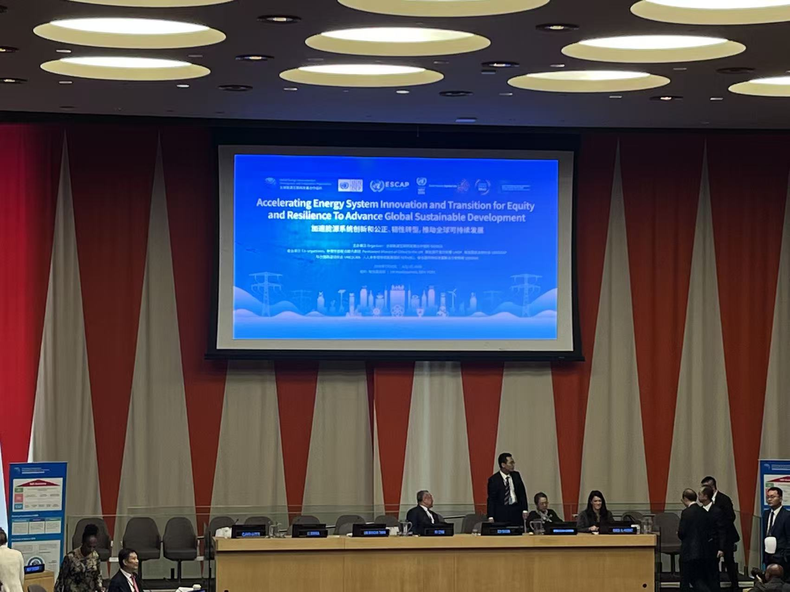
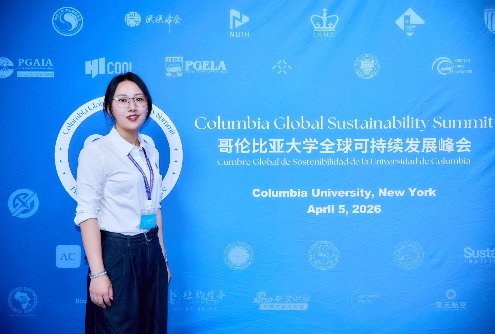
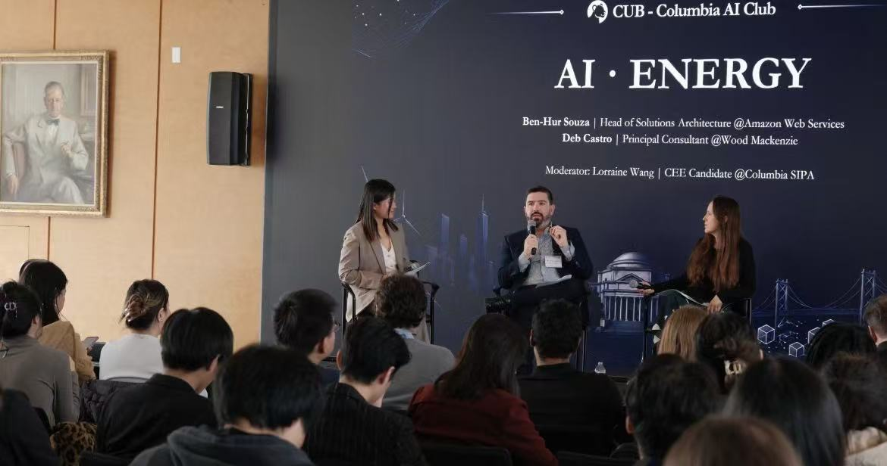
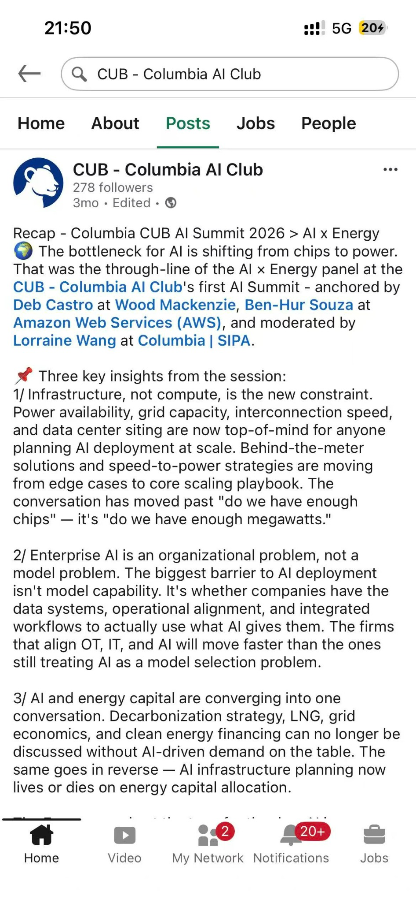

Attended a United Nations forum on accelerating energy system innovation and transition
Joined discussions on equitable and resilient energy-system transitions and global sustainable development.

News & Activities
Selected academic activities, conferences, and student-community work around sustainability, energy systems, and AI.
Joined discussions on equitable and resilient energy-system transitions and global sustainable development.

Supported a campus-wide sustainability event at Columbia University, bringing together speakers and participants around global sustainability and energy-transition topics.


Supported an AI-and-energy discussion hosted by CUB - Columbia AI Club, connecting questions of AI infrastructure, power availability, decarbonization, and energy capital.

